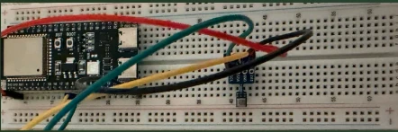
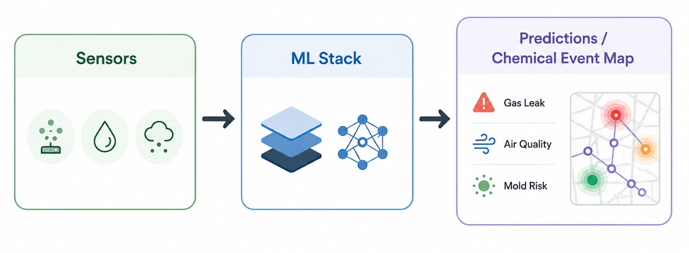
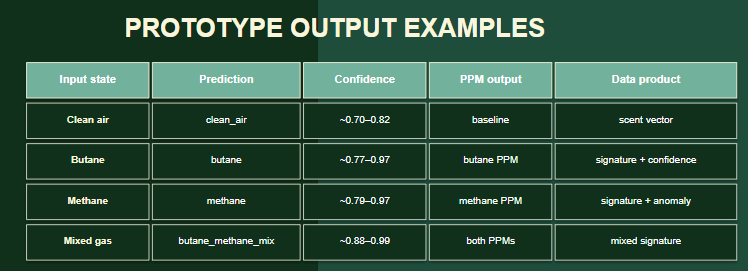
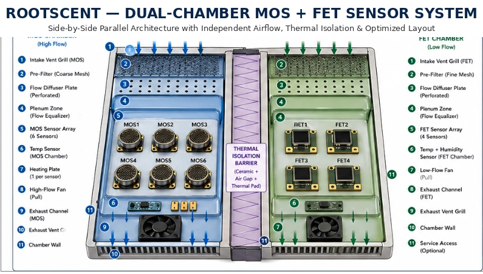

Sense
MOS and FET sensor arrays capture changes in airborne chemistry under controlled sampling conditions.
Working prototype · Now building pilot hardware
RootScent is building the chemical intelligence layer for the physical world—turning patterns in the air into structured data that buildings, robots, and infrastructure can understand.

Illustrative interface based on current prototype outputs.
Airborne chemistry is a data layer the physical world is missing.
Scroll to understand the systemBuilt, not just imagined
Most gas detection is still built around one sensor, one known gas, and one fixed threshold. That model can alert after a target reaches a limit; it does not create a reusable understanding of how chemical events begin, combine, and move.
A controlled sensor node captures multidimensional responses to volatile compounds. Our machine-learning pipeline turns those response curves into chemical-event classifications, concentration estimates, anomaly scores, and spatial patterns.
MOS and FET sensor arrays capture changes in airborne chemistry under controlled sampling conditions.
Signal processing, environmental correction, device normalization, and ML extract a stable chemical fingerprint.
Operators and systems receive structured outputs they can compare, map, and act on.

We built a physical prototype and the complete data path around it. Early tests captured distinct butane, methane, mixed-gas, and clean-air states—not a simulation, but live response data from real hardware.
What works today

Our initial wedge is continuous chemical anomaly detection in high-value environments. Each deployment delivers immediate monitoring value while generating the real-world drift, interference, and mixture data needed to improve the network.
Continuous context for indoor-air and equipment anomalies.
Persistent monitoring around storage, manufacturing, and critical equipment.
Distributed chemical awareness for facilities, robots, and connected systems.
The node creates distribution.
The dataset creates the moat.
Independent airflow, thermal isolation, environmental sensing, and temperature cycling make the physical system part of the model—not just an enclosure around it.

Affordable sensor arrays can produce richer signals. Edge compute can process them locally. Modern machine learning can separate patterns that fixed thresholds miss. RootScent brings those pieces into one system.
Multiple sensing technologies and temperature cycles create a multidimensional chemical response.
Local processing supports rapid anomaly detection without waiting for every sample to reach the cloud.
Connected deployments can turn isolated signals into an improving chemical-event dataset.
RootScent brings together engineering, physics, chemistry, and mathematics to build both sides of the system: the hardware that produces reliable signals and the intelligence that makes them useful.
Industrial Engineering + Physics
Purdue University
Chemistry + Mathematics
Emory University
Co-founder
ROOTSCENT / 2026
We are looking for pilot partners, technical collaborators, and people who believe chemistry should be computable.
Start a conversation ↗